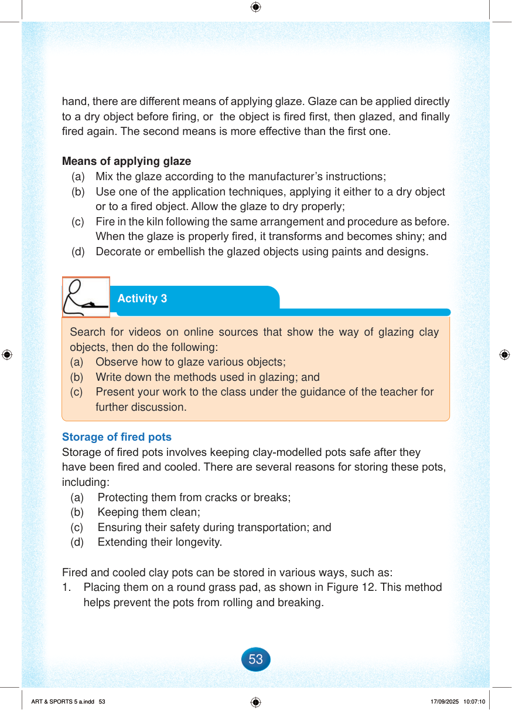

hand, there are different means of applying glaze.
Glaze can be applied directly to a dry object before firing, or the object is fired first, then glazed, and finally fired again.
The second means is more effective than the first one.
Means of applying glaze
(a)
Mix the glaze according to the manufacturer’s instructions;
(b)
Use one of the application techniques, applying it either to a dry object or to a fired object.
Allow the glaze to dry properly;
(c)
Fire in the kiln following the same arrangement and procedure as before.
When the glaze is properly fired, it transforms and becomes shiny; and
(d)
Decorate or embellish the glazed objects using paints and designs.
Storage of fired pots
Storage of fired pots involves keeping clay-modelled pots safe after they have been fired and cooled.
There are several reasons for storing these pots, including:
(a)
Protecting them from cracks or breaks;
(b)
Keeping them clean;
(c)
Ensuring their safety during transportation; and
(d)
Extending their longevity.
Fired and cooled clay pots can be stored in various ways, such as:
1.
Placing them on a round grass pad, as shown in Figure 12.
This method helps prevent the pots from rolling and breaking.
Activity 3
Search for videos on online sources that show the way of glazing clay objects, then do the following:
(a)
Observe how to glaze various objects;
(b)
Write down the methods used in glazing; and
(c)
Present your work to the class under the guidance of the teacher for further discussion.